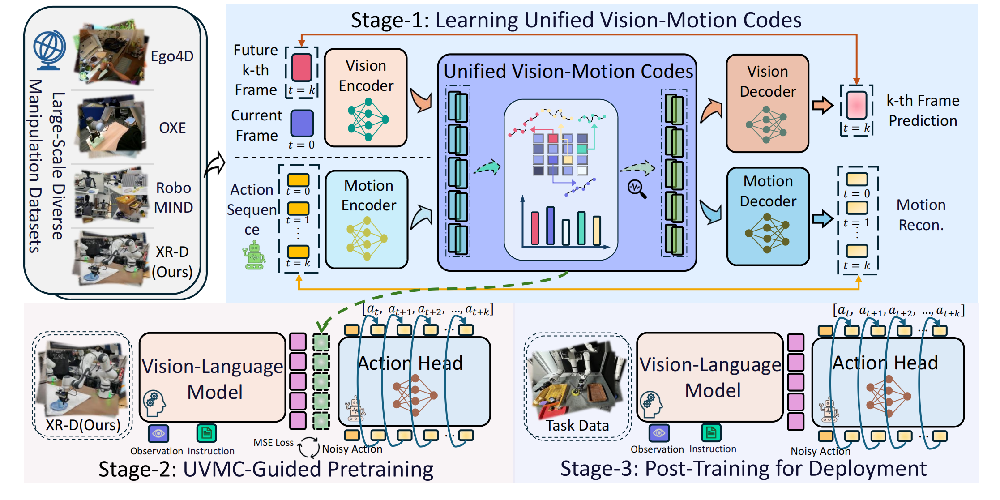
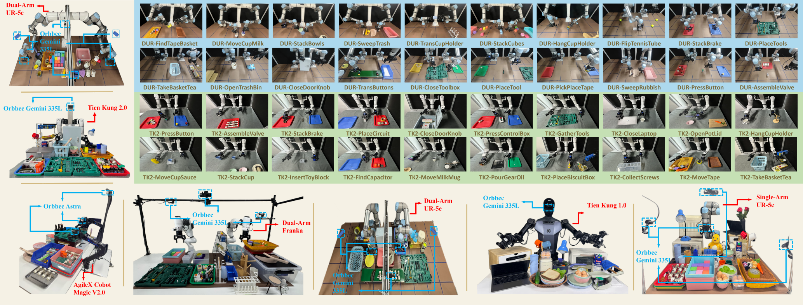
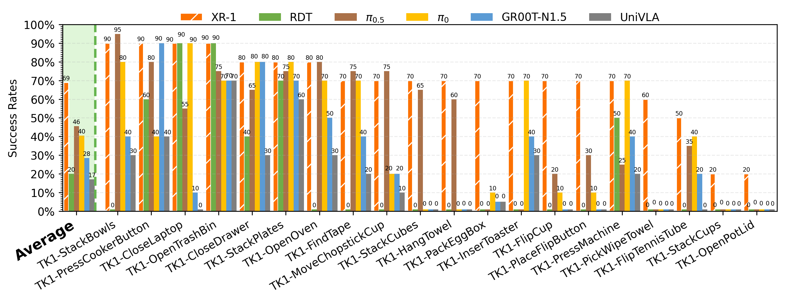

XR-1: Towards Versatile Vision-Language-Action Models via Learning Unified Vision-Motion Representations
Abstract
Recent progress in large-scale robotic datasets and vision-language models (VLMs) has advanced research on vision-language-action (VLA) models. However, existing VLA models still face two fundamental challenges: (i) producing precise low-level actions from high-dimensional observations, (ii) bridging domain gaps across heterogeneous data sources, including diverse robot embodiments and human demonstrations. Existing methods often encode latent variables from either visual dynamics or robotic actions to guide policy learning, but they fail to fully exploit the complementary multi-modal knowledge present in large-scale, heterogeneous datasets. In this work, we present X Robotic Model 1 (XR-1), a novel framework for versatile and scalable VLA learning across diverse robots, tasks, and environments. At its core, XR-1 introduces the Unified Vision-Motion Codes (UVMC), a discrete latent representation learned via a dual-branch VQ-VAE that jointly encodes visual dynamics and robotic motion. UVMC addresses these challenges by (i) serving as an intermediate representation between the observations and actions, and (ii) aligning multimodal dynamic information from heterogeneous data sources to capture complementary knowledge. To effectively exploit UVMC, we propose a three-stage training paradigm: (i) self-supervised UVMC learning, (ii) UVMC-guided pretraining on large-scale cross-embodiment robotic datasets, and (iii) task-specific post-training. We validate XR-1 through extensive real-world experiments with more than 14,000 rollouts on six different robot embodiments, spanning over 120 diverse manipulation tasks. XR-1 consistently outperforms state-of-the-art baselines such as $\pi_{0.5}$, $\pi_0$, RDT, UniVLA, and GR00T-N1.5 while demonstrating strong generalization to novel objects, background variations, distractors, and illumination changes.
Overview

Overview of XR-1. In XR-1, we introduce the Unified Vision-Motion Codes (UVMC), a discrete latent representation that jointly encodes visual dynamics and robotic motion. XR-1 adopts a three-stage training paradigm to enable precise low-level control across diverse robots and tasks.
Stage-1: Learning Unified Vision-Motion Codes
In Stage-1, we learn the Unified Vision-Motion Codes (UVMC) through a dual-branch VQ-VAE architecture. The visual encoder and motion encoder jointly encode visual observations and action sequences into a shared discrete codebook. This unified representation bridges the semantic gap between human demonstrations and robot actions, enabling effective knowledge transfer across diverse robot embodiments and environments.
Stage-2: UVMC-Guided Pretraining for Generalist Policy
In Stage 2, after extracting the Unified Vision-Motion Code (UVMC) from the dual-branch VQ-VAE as the supervision signals, we integrate this representation into the policy learning process to enhance low-level action prediction. We pretrain the policy using large-scale cross-embodiment robotic datasets XR-D (158k trajectories and 69.1M frames).
Stage-3: Post-Training for Deployment
In Stage 3, after large-scale UVMC-guided pretraining, the model develops strong capabilities in extracting unified vision-motion knowledge and generating precise low-level actions.
Experiment Setup

Experimental Setup. We evaluate XR-1 across six robot embodiments(Tien Kung 1.0/2.0, Single-/Dual-Arm UR-5e, Dual-Arm Franka, and AgileX Cobot Magic 2.0), covering more than 120 manipulation tasks with over 14,000 rollouts.
XR1 Inference Video Samples
Dual-Arm UR-5e
DUR-StackBowls
DUR-SweepTrash
DUR-FindTapeBasket
Tien Kung 2.0
TK2-CloseDoorKnob
TK2-CollectScrews
TK2-TakeBasketTea
Tien Kung 1.0
TK1-PlaceFlipButton
TK1-PickWipeTowel
TK1-MoveChopstickCup
Dual-Arm Franka
DFR-StackBowls
DFR-SweepRubbish
DFR-TransferCup
AgileX Cobot Magic V2.0
AGX-MeshStackCup
AGX-HangScissors
AGX-PlaceScrewdriver
Single-Arm UR-5e
SUR-PackEggBox
SUR-PourTubeBeaker
SUR-StackCubes
Generalization Setup
DFR-SweepTrash
Base
Unseen Dustpan
Unseen Rub
Unseen Rub&Dynamic Interference
DFR-TransferCup
Base
Unseen Background
Unseen Cup&Static Interference
Unseen Cup&Background&Light
Comparison with Baselines
Representative Tasks Comparison
We conducted evaluations on bimanual collaboration, dexterous manipulation, fluid/deformable object handling, contact-rich interactions, and dynamic environments. Our XR1 model was compared against baseline methods including RDT, π0.5, π0, GR00T-N1.5, and UniVLA. We selected the best baseline (π0.5) for comparative demonstration videos. Demonstration videos are shown below:
Bimanual Collaboration: DUR-TransCupHolder
Baseline
Ours
Dexterous Manipulation: DUR-CloseDoorKnob
Baseline
Ours
Fluid Object Handling: SUR-PourTubeBeaker
Baseline
Ours
Deformable Object Handling: DFR-HangTowelRack
Baseline
Ours
Contact-Rich Interactions: DFR-SweepRubbish
Baseline
Ours
Dynamic Environments: DUR-TransButtons
Baseline
Ours
Few-shot Comparison
We conducted few-shot learning experiments on the Dual-ArmUR-5e and Tien Kung 2.0 robotic systems, performing comparative analysis against single-task baseline methods including ACT and DP. The experimental results and comparative evaluation are presented as follows:
TK2-PlaceCircuit
ACT
DP
Ours
Experiment Result
Main experiment: 6 different embodiments, with 20 tasks per embodiment, comparing results against RDT, π0.5, π0, GR00T-N1.5, and UniVLA baselines.
Dual-Arm UR-5e_results

Tien Kung 2.0_results

Tienkung1_results

Dual-Arm Franka_results

AgileX Cobot Magic V2.0_results

Single-Arm UR-5e_results